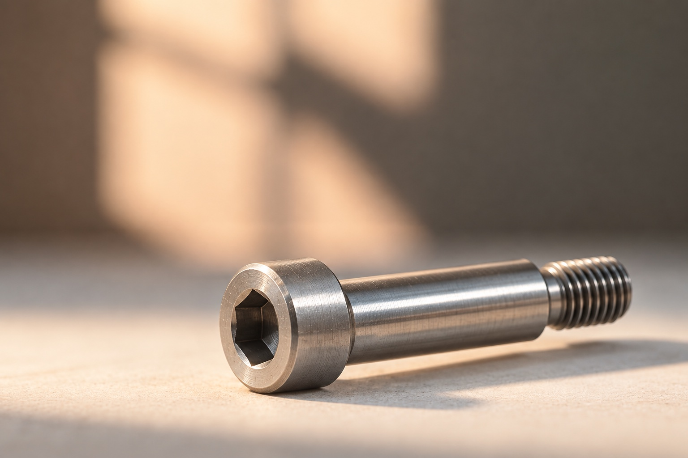
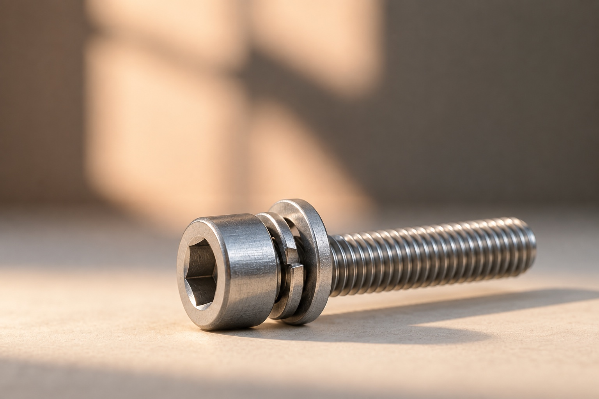
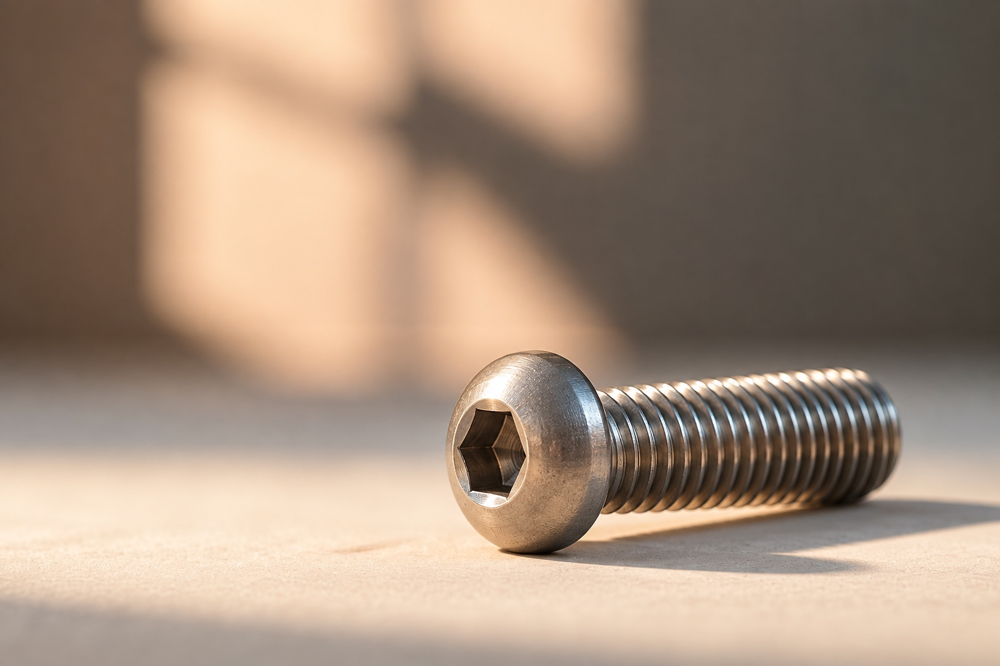
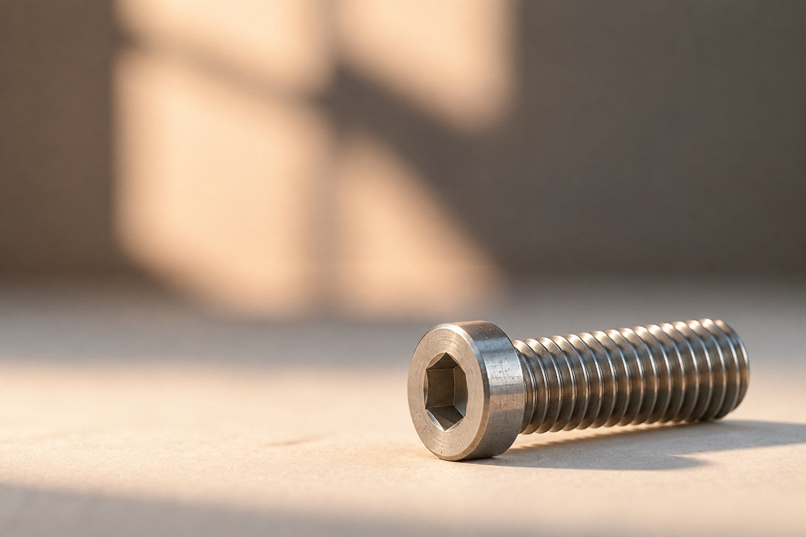
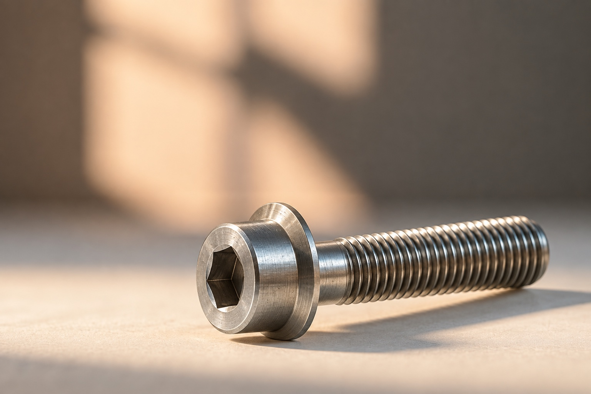
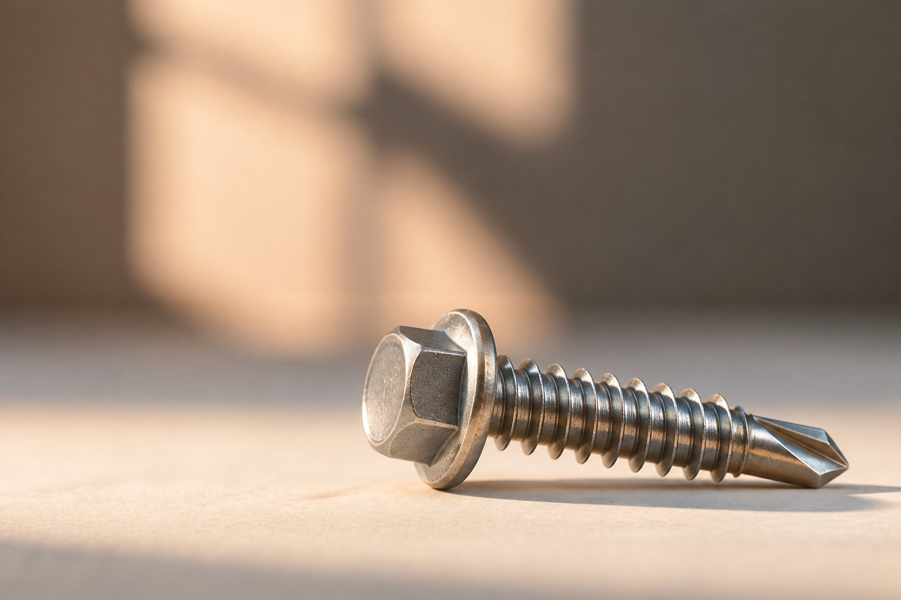
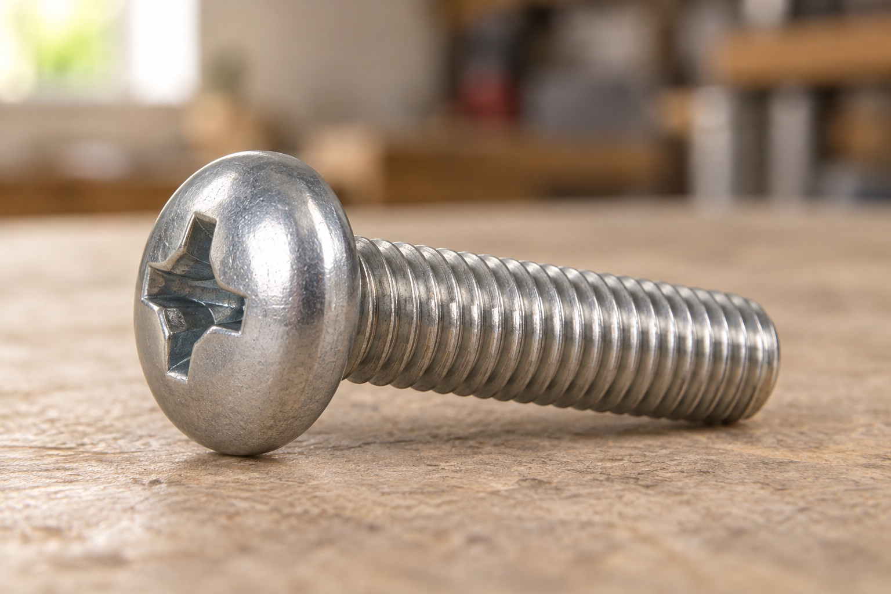
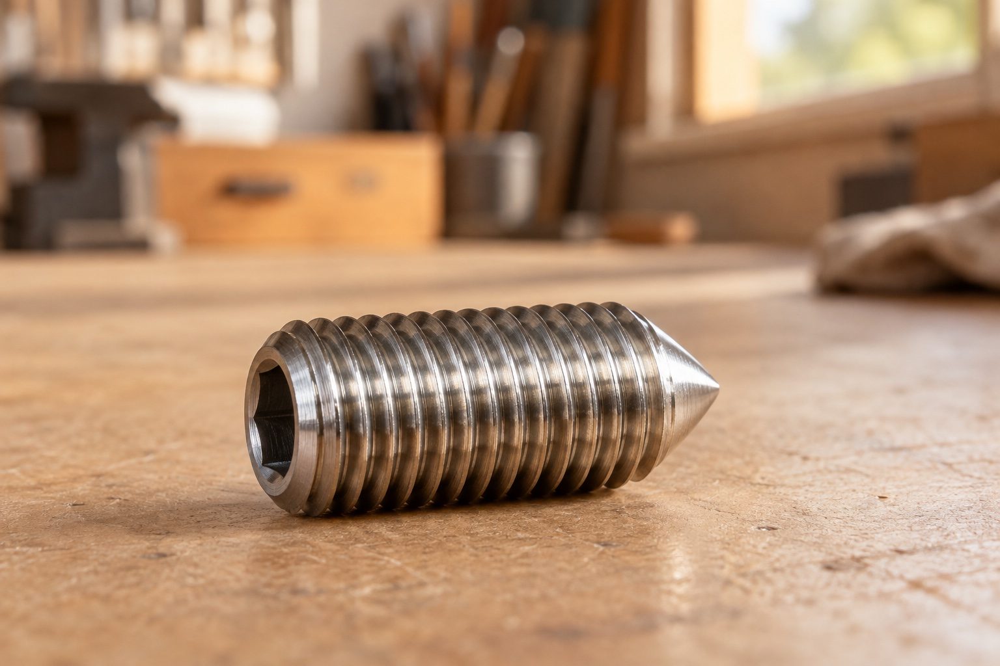

Tornillos
Tornillos Allen, de máquina, prisioneros, de hombro, manuales, combinados, autorroscantes y autoperforantes.
Familias de productos
Tornillos de máquina
Familias de fijaciones industriales. Material, dimensiones y acabado se confirman según sus requisitos.

Tornillos prisioneros
Familias de fijaciones industriales. Material, dimensiones y acabado se confirman según sus requisitos.

Tornillos de hombro
Familias de fijaciones industriales. Material, dimensiones y acabado se confirman según sus requisitos.
Tornillos de apriete manual
Familias de fijaciones industriales. Material, dimensiones y acabado se confirman según sus requisitos.

Tornillos ensamblados y cautivos
Familias de fijaciones industriales. Material, dimensiones y acabado se confirman según sus requisitos.

Tornillos autoperforantes
Familias de fijaciones industriales. Material, dimensiones y acabado se confirman según sus requisitos.

Tornillos autorroscantes
Familias de fijaciones industriales. Material, dimensiones y acabado se confirman según sus requisitos.
Explorar por tipo de cabeza
Explorar por tipo de accionamiento
Todos los productos

Tornillo avellanado con hexágono interior
ISO 10642:2026
Cabeza avellanada para montaje enrasado con hexágono interior. Indique sus requisitos para cotizar.
Tornillos de cabeza cilíndrica Allen
Plano / especificación
Accionamiento hexagonal interno para montaje mecánico; seleccione la cabeza según el espacio y el asiento.

Tornillos Allen de cabeza abombada
Plano / especificación
Accionamiento hexagonal interno para montaje mecánico; seleccione la cabeza según el espacio y el asiento.

Tornillos Allen de cabeza baja
Plano / especificación
Accionamiento hexagonal interno para montaje mecánico; seleccione la cabeza según el espacio y el asiento.
Tornillos avellanados Phillips
Plano / especificación
Tornillos de máquina para orificios roscados o tuercas; elija accionamiento y cabeza según el montaje.

Tornillos ranurados de cabeza cilíndrica
Plano / especificación
Tornillos de máquina para orificios roscados o tuercas; elija accionamiento y cabeza según el montaje.
Tornillos prisioneros Allen de punta plana
Plano / especificación
Fijaciones sin cabeza con extremo plano para posicionar o sujetar componentes.
Tornillos de hombro
Plano / especificación
El vástago liso permite posicionar; confirme diámetro, ajuste y rosca en el plano.
Tornillos moleteados de apriete manual
Plano / especificación
La cabeza moleteada permite ajustes manuales y tapas desmontables sin herramienta separada.
Tornillos SEMS con arandelas
Plano / especificación
Fijaciones de montaje que retienen las arandelas o el tornillo durante instalación y mantenimiento.

Tornillos cautivos
Plano / especificación
Fijaciones de montaje que retienen las arandelas o el tornillo durante instalación y mantenimiento.

Tornillos Allen con brida
Plano / especificación
Accionamiento hexagonal interno para montaje mecánico; seleccione la cabeza según el espacio y el asiento.
Tornillos autoperforantes avellanados
Plano / especificación
La punta broca combina perforación y fijación en chapas compatibles; seleccione según material y espesor.

Tornillos autoperforantes hexagonales
Plano / especificación
La punta broca combina perforación y fijación en chapas compatibles; seleccione según material y espesor.

Tornillos de máquina Phillips de cabeza alomada
Plano / especificación
Cabeza alomada Phillips y rosca de máquina; confirme espacio, paso y taladro acoplado.
Tornillos autorroscantes
Plano / especificación
Tornillos autorroscantes puntiagudos; confirme sustrato, taladro previo y longitud de engrane.

Prisioneros Allen de punta cónica
Plano / especificación
Prisioneros Allen de punta cónica; especifique alojamiento y posicionamiento.

Prisioneros Allen de punta cóncava
Plano / especificación
Prisioneros Allen de punta cóncava; confirme superficie de contacto y sujeción.

Prisioneros Allen de punta cilíndrica
Plano / especificación
Prisioneros Allen de punta cilíndrica; especifique diámetro, longitud y alojamiento.